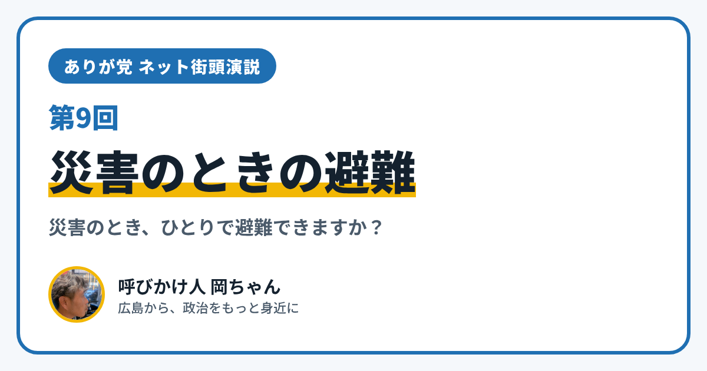

ありが党 ネット街頭演説 第9回｜災害のとき、ひとりで避難できますか？

こんにちは、ありが党の呼びかけ人、岡ちゃんです。今日のネット街頭演説のテーマは「災害のときの避難」です。
大雨や地震のとき、「ひとりで避難所まで行けるかな」と不安になったこと、ありませんか？ 車椅子の人や介護が必要な人にとって、避難は大きな心配ごとです。広島は大雨の災害も経験してきたまちなので、なおさらです。
今日は、いざというときのしくみを2つ紹介します。
広島市の「避難行動要支援者名簿」
1つめは、広島市がつくっている、自分だけで避難するのがむずかしい人の名簿です。
- 対象は、たとえば「要介護3以上の人」「身体障害者手帳1・2級（肢体不自由は3級も）の人」「療育手帳マルA・Aの人」「精神障害者保健福祉手帳1級の人」などです
- 自分から申し込む必要はなく、市が毎年1回つくります
- 毎年1回、家に調査票が届きます。「同意」と書いて返すと、民生委員さん、町内会・自治会、自主防災組織、地域包括支援センター、障害者基幹相談支援センターなど、地域で支える人たちに名前が伝わります
ただし、市のページには「同意しても、必ず避難の手助けがあると約束するものではない」とも書かれています。名簿は、地域の人とつながるための「入り口」なんだと僕は受け止めています。
問い合わせ先は、広島市 危機管理室 危機管理課（電話 082-504-2653）です。
ひとりひとりの「個別避難計画」
2つめは「個別避難計画」です。「誰と、どこへ、どうやって避難するか」を、ひとりひとりに合わせて前もって決めておく計画です。2021年に法律（災害対策基本法）が変わり、この計画をつくることが、市町村の努力義務になりました。
僕が考えたいこと
僕は、電動車椅子で暮らしています。だからこそ、「助けてもらう人」と「助ける人」に分かれるのではなく、ふだんから顔を知っている関係が、いちばんの備えになると思っています。障がいがあってもなくても、近所で声をかけ合えるまちを、みんなで考えたいです。
あなたは、災害のときの避難で、どんなことが心配ですか？ 「こんな工夫をしているよ」という声も大歓迎です。InstagramのDM（@ayu19841002）や、ありが党のページから、あなたの暮らしの声を聞かせてください。
ありが党は、まだ僕ひとりから始めたばかりです。政治をもっと身近にしたいと思う方、一緒に考えてくれる仲間を探しています。InstagramのDM（@ayu19841002）で気軽に声をかけてください。